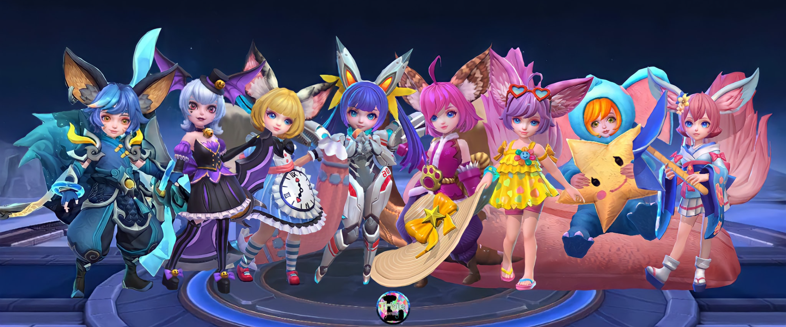

50 < 10 > 7 ♠
Jennie (singer)

About
"Jennie Kim" redirects here.
Not to be confused with Jenny Kim.
The native form of this personal name is Kim Jennie.
This article uses Western name order when
mentioning
individuals.
Jennie Kim (Korean: 김제니; born January 16, 1996), known mononymously as Jennie, is a South Korean singer and rapper. Born and raised in South Korea, Jennie studied in New Zealand for five years before returning to South Korea in 2010. She debuted as a member of the girl group Blackpink, formed by YG Entertainment, in August 2016. In November 2018, Jennie made her debut as a solo artist with the single "Solo". The song was a commercial success domestically and internationally, topping both the Gaon Digital Chart and Billboard's World Digital Songs chart.
Early life
Jennie Kim was born in Cheongdam-dong, Gangnam-gu, Seoul[3] on January 16, 1996, as an only child.[4][5] She initially attended Cheongdam Elementary School in Seoul before moving to New Zealand.[6] When she was eight years old, she went on a trip with her family to Australia and New Zealand. When her mother asked her if she liked New Zealand and wanted to stay, Jennie replied "yes"; one year later, she was sent to study at Waikowhai Intermediate School in Auckland and lived with a home-stay family.[7] Jennie spoke about her experience learning a new language on the MBC's documentary English, Must Change to Survive (2006).[8] During her adolescent years, she dreamed of becoming a ballet dancer.[9] After completing intermediate, she enrolled at ACG Parnell College.[7]
Jennie first heard of K-pop while in New Zealand, particularly finding an interest in YG Entertainment's music.[10] Her mother planned to move her to Florida in the United States at the age of 14 to continue her studies to become a lawyer or teacher; however, she did not like the idea and was concerned about not finding work she liked while living alone. Her family supported her decision, and she moved back to South Korea in 2010, where she studied at Cheongdam Middle School.[11][10][12] Jennie auditioned for YG Entertainment that same year with Rihanna's "Take a Bow", succeeding in joining the label as a trainee.[13] Through High Cut Korea, she revealed because she was afraid of strangers and reluctant to take initiative, she could barely introduce herself during her audition.[14]

Career
2012–2017: Career beginnings and debut with BlackpinkOn April 10, 2012, Jennie was introduced through a photo titled "Who's that girl?" via the official blog of YG Entertainment.[17] Her photograph gained interest from netizens, soon becoming the most searched topic on portal sites under the name "Mystery Girl".[18][19] On August 30, YG Entertainment released a YouTube video through their blog titled "YG Trainee - Jennie Kim", in which she covered B.o.B.'s song "Strange Clouds" featuring Lil Wayne.[20][21] On September 1, Jennie made her first public appearance as the lead actress in G-Dragon's music video "That XX" from his extended play One of a Kind.[22][23] On January 21, 2013, another video titled "Jennie Kim - YG New Artist", in which she covered the song "Lotus Flower Bomb" by rapper Wale, was released.[24] In March, Lee Hi featured Jennie on her B-side track, "Special" from her debut album, First Love.[25] In August, Jennie featured on Seungri's B-side track "GG Be" from his extended play Let's Talk About Love.[26] In September, she featured on G-Dragon's B-side track "Black", recording the hook in less than five days before the release of his album Coup d'Etat.[27] On September 8, she made her first stage appearance alongside G-Dragon on SBS' Inkigayo.[28]
Artistry and image
Influences and musical style
When Jennie first began to rap, she studied the work of artists she admired and respected, such as Lauryn Hill and TLC.[59] Jennie cited Rihanna as her main musical influence and role model.
Fashion and image
Jennie began reading fashion magazines and looking at different clothing styles when she was a child.[63] Her interest in fashion came from her mother. Jennie told Elle Indonesia that Chanel was a part of her life from a young age and that she still remembered her first memory involving the fashion house:Personal life
Jennie speaks fluent Korean and English along with basic Japanese. She also learned to speak some French.[73]
Blackpink member
- YG
- Jennie
- Jisoo
- SM
- Lisa
- Rose
1 / 5 + 5 /7 = 5